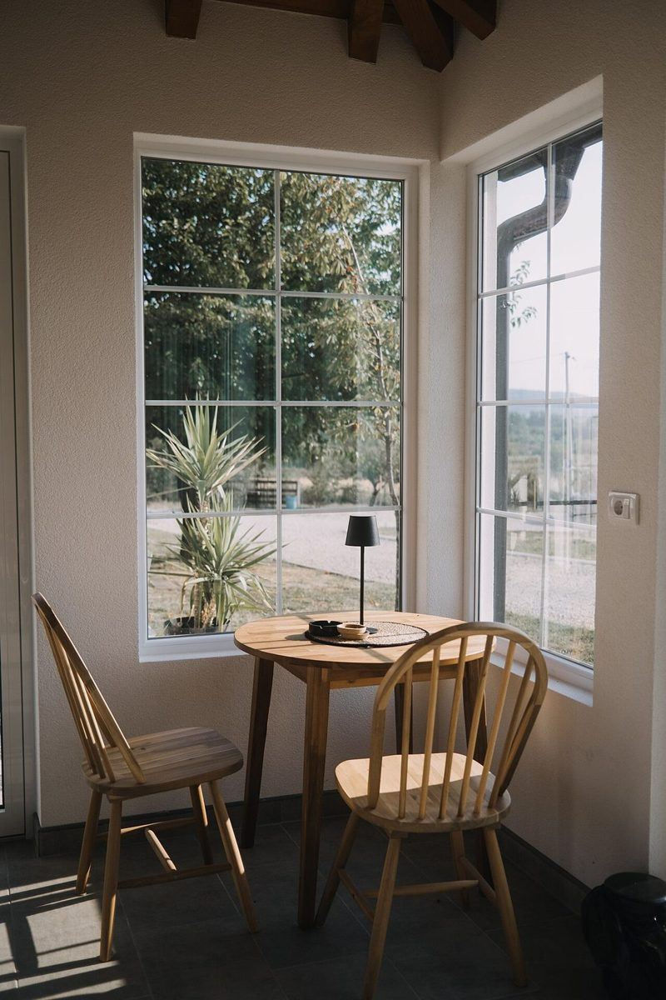
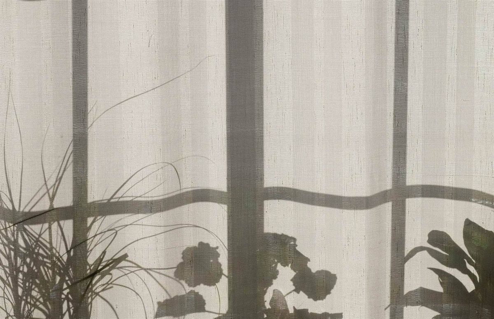

カフェ / 島根県浜田市
MimosawithSpace
島根県浜田市黒川町にあるカフェ「Mimosa with Space」のご案内ページです。営業時間やメニューなど、詳しいことは準備中。まずはInstagramをのぞいてみてください。

このサイトの作り方
屋号の「Space」から、空白の見本帖に。
お店の名前に「Space」という語が入っていたので、制作側は文字組みに使う「空白」の種類を連想しました。全5ページを、空白文字5種(名前の下にある「U+」は文字の番号)に1ページずつ当てはめています。ただ、屋号の意味や由来は分かりません。この連想は制作側のもので、お店の理念・屋号の由来とは無関係です。
空白の幅くらべ(説明用の目安図)
五つの空白と、五つのページ
棒の長さは全角スペースを100としたおおよその目安で、書体によって幅は変わります。
余白のイメージ
何も置かない空と、窓辺。
写真は浜田市の風景やお店の様子ではありません。「余白」というイメージで選んだ、国外・撮影地不明のフリー素材です。



ご案内
お店のこと(確認できたものだけ)
| 所在地 | 〒697-0024 島根県浜田市黒川町3743-5 |
|---|---|
| 電話 | なし |
| 営業時間 | 準備中 |
| 定休日 | 準備中 |
| ご予約 | 準備中 |
| 駐車場 | 準備中 |
| SNS | Instagram @mimosa_with_space |